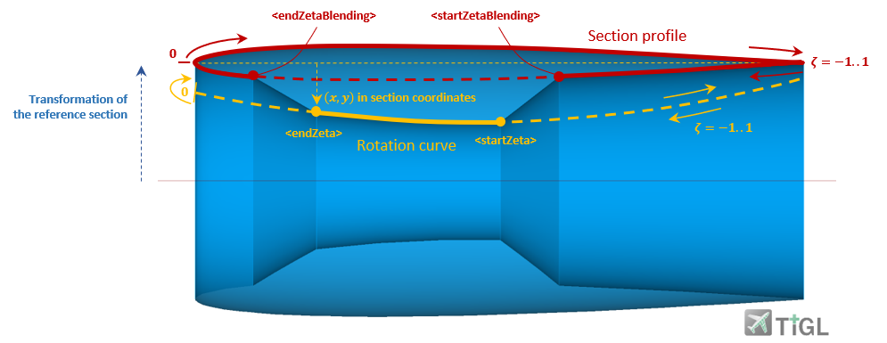

complexType · all
Rotation curve
The figure below shows an example of a rotation curve. Together with the corresponding XML code, the definition is explained in more detail.

First, the reference system is defined via referenceSectionUID, for which in this example the section with uID="engine_nacelle_fanCowl_section1" is referenced. This in turn contains a transformation (not shown here), for example a translation by z=0.4 and a scaling, where the x-direction is stretched by a factor of two.
The rotation curve is now described in this reference system. It is predefined in the profile library and referenced via a its uID. Note that the curve is defined in the range x=[0,..,1] in order to be reasonably transformed by the reference system.
Next, the blending from the rotated profile of the nacelle segment to the rotation curve is defined. The corresponding start and end points are given in curve coordinates zeta of the corresponding profiles. Note that the lower part of the segment profile counts from zeta=[-1,..,0] and the upper part counts from zeta=[0,..,1]. In between, the blending is linear.
<rotationCurve uID="rotationCurve">
<referenceSectionUID>engine_nacelle_fanCowl_section1</referenceSectionUID>
<curveProfileUID>fanCowl_upperSection</curveProfileUID>
<startZetaBlending>-0.6</startZetaBlending>
<startZeta>-0.5</startZeta>
<endZeta>-0.2</endZeta>s
<endZetaBlending>-0.1</endZetaBlending>
</rotationCurve><curveProfile uID="fanCowlRotationCurve">
<name>Fan cowl rotation curve profile</name>
<pointList>
<x mapType="vector">0;0.5;1</x>
<y mapType="vector">-0.1;-0.2;-0.05</y>
</pointList>
</curveProfile>| Name | Type | Constraints | Use | Default | Description |
|---|---|---|---|---|---|
@uID | xsd:ID | required | UID |
| Name | Type | Constraints | OccurrenceHow often the element may appear at this place. The schema writes it as minOccurs and maxOccurs on the declaration. | Default | Description |
|---|---|---|---|---|---|
| allThe children below may appear in any order. Each may appear at most once. | |||||
referenceSectionUID | stringUIDBaseType | [1..1] required | UID of the section which serves as reference | ||
startZeta | doubleBaseType | [1..1] required | Start zeta [-1,..,1]; relative curve coordante along the rotation curve from which it will be inserted in the nacelle | ||
endZeta | doubleBaseType | [1..1] required | End zeta [-1,..,1]; relative curve coordante along the rotation curve up to which it will be inserted in the nacelle | ||
startZetaBlending | doubleBaseType | [1..1] required | Start zeta for blending [-1..1]; relative curve coordinate along the nacelle profile at which blending from the nacelle profile to the rotation curve will begin | ||
endZetaBlending | doubleBaseType | [1..1] required | End zeta for blending; relative curve coordinate along the nacelle profile at which blending from the rotation curve to the nacelle profile will end | ||
curveProfileUID | stringUIDBaseType | [1..1] required | UID of the rotation curve profile; the profile should be defined in x=[0..1] to be transformed by the section which is referenced by referenceSectionUID | ||
cpacs/vehicles/engines/engine/nacelle/fanCowl/rotationCurvecpacs/vehicles/engines/engine/nacelle/coreCowl/rotationCurve| Type | Name |
|---|---|
nacelleCowlType | rotationCurve |